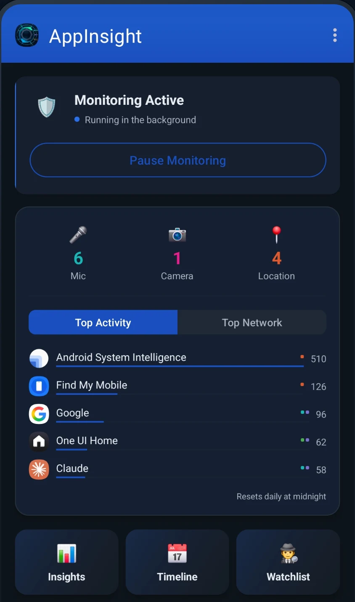
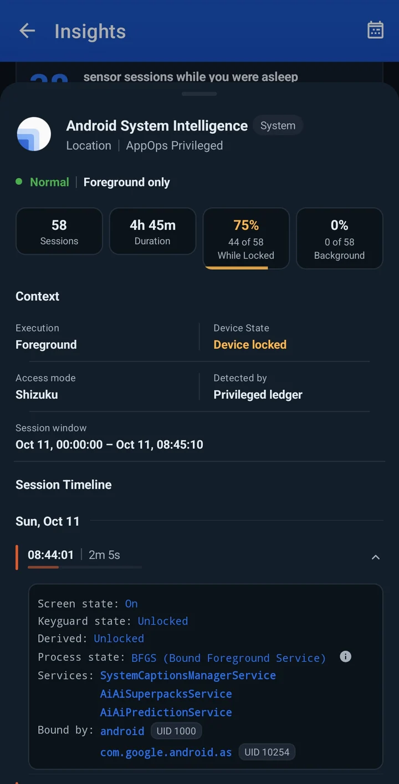
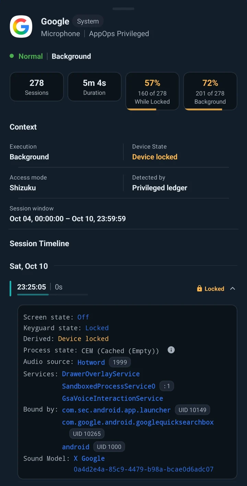

Which apps used your mic, camera, and location. On the record.
Every time an app uses your mic, camera, or location, AppInsight records it. Which app, when, and for how long, laid out on a timeline you can scroll back through.
Every time an app uses your mic, camera, or location, AppInsight records it. Which app, when, and for how long, laid out on a timeline you can scroll back through.

Open the app and the day so far is right there. Monitoring status, today's count for each sensor, and which apps have been busiest. Resets at midnight.
Nothing to set up. Install it and every mic, camera, and location access starts landing on your timeline. When you want the full picture, a free tool called Shizuku unlocks the exact app behind every single event.
The timeline is the raw record. Insights turns it into patterns, and every pattern opens up. Tap a square on the heatmap for the apps behind it, then tap an app for its whole week.


Insights gives you the numbers. Tap any app and you get the sessions behind them, each one with the screen state, the lock state, and what was running at the time.
AppInsight records that an app used your location, never where you were. Same for the mic and camera: who used them and when, never what was said or seen.
No. Android already lets you grant and revoke permissions. AppInsight shows you what apps actually did with the permissions they hold, which is the part Android buries.
No. It works out of the box. If you want every event named, system apps included, Shizuku gets you there without root.
A free, open source tool that lets apps like AppInsight see deeper into Android. You set it up once, no root and no computer needed, and AppInsight walks you through every step.
Don't trust it, check it. AppInsight ships without internet permission, which means Android will not let it send anything anywhere. That is not a promise we're making, it is how the app is built.